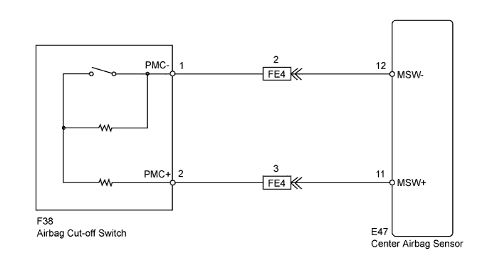
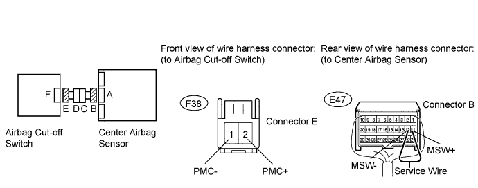
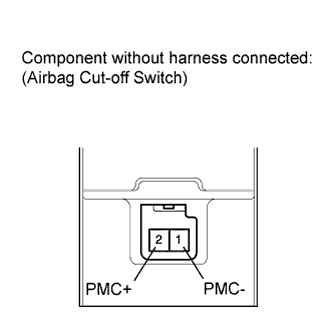
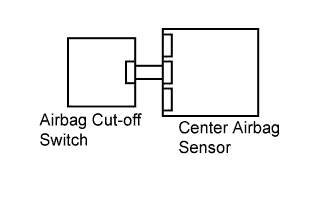
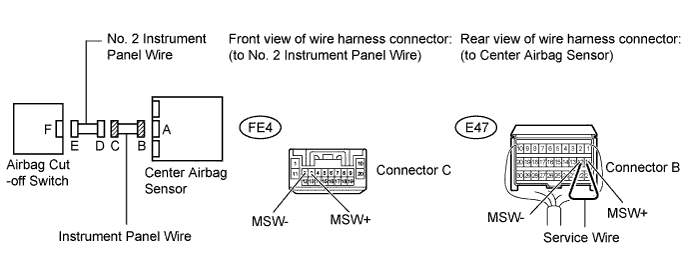

DTC B1651/33 Manual Cut off Switch Trouble |
| DTC Code | DTC Detection Condition | Trouble Area |
| B1651/33 | When all the conditions below are met:
|
|

| 1.CHECK INSTRUMENT PANEL WIRE (CENTER AIRBAG SENSOR - AIRBAG CUT-OFF SWITCH) |

Turn the engine switch off.
Disconnect the cable from the negative (-) battery terminal, and wait for at least 90 seconds.
Disconnect the connectors from the center airbag sensor and airbag cut-off switch.
Connect the cable to the negative (-) battery terminal, and wait for at least 2 seconds.
Turn the engine switch on (IG).
Measure the voltage according to the value(s) in the table below.
| Tester Connection | Switch Condition | Specified Condition |
| F38-2 (PMC+) - Body ground | Engine switch on (IG) | Below 1 V |
| F38-1 (PMC-) - Body ground | Engine switch on (IG) | Below 1 V |
Turn the engine switch off.
Disconnect the cable from the negative (-) battery terminal, and wait for at least 90 seconds.
Using a service wire, connector terminals 11 (MSW+) and 12 (MSW-) of connector B.
Measure the resistance according to the value(s) in the table below.
| Tester Connection | Condition | Specified Condition |
| F38-2 (PMC+) - F38-1 (PMC-) | Always | Below 1 Ω |
Disconnect a service wire from connector B.
Measure the resistance according to the value(s) in the table below.
| Tester Connection | Condition | Specified Condition |
| F38-2 (PMC+) - F38-1 (PMC-) | Always | 1 MΩ or higher |
| F38-2 (PMC+) - Body ground | Always | 1 MΩ or higher |
| F38-1 (PMC-) - Body ground | Always | 1 MΩ or higher |
|
| ||||
| OK | |
| 2.INSPECT AIRBAG CUT-OFF SWITCH |
 |
Remove the airbag cut-off switch (Click here).
Measure the resistance according to the value(s) in the table below.
| Tester Connection | Switch Condition | Specified Condition |
| 2 (PMC+) - 1 (PMC-) | Cut off switch is in "ON" position (Front passenger side airbag is active) | 360 to 440 Ω |
| 2 (PMC+) - 1 (PMC-) | Cut off switch is in "OFF" position (Front passenger side airbag is not active) | 90 to 110 Ω |
|
| ||||
| OK | |
| 3.CHECK CENTER AIRBAG SENSOR |
 |
Connect the connectors to the center airbag sensor and the airbag cut-off switch.
Connect the cable to the negative (-) battery terminal, and wait for at least 2 seconds.
Turn the engine switch on (IG), and wait for at least 60 seconds.
Clear the DTCs stored in memory (Click here).
Turn the engine switch off.
Turn the engine switch on (IG), and wait for at least 60 seconds.
Check the DTCs (Click here).
|
| ||||
| OK | ||
| ||
| 4.CHECK INSTRUMENT PANEL WIRE (CENTER AIRBAG SENSOR - NO. 2 INSTRUMENT PANEL WIRE) |

Disconnect the instrument panel wire connector from the No. 2 instrument panel wire.
Connect the cable to the negative (-) battery terminal, and wait for at least 2 seconds.
Turn the engine switch on (IG).
Measure the voltage according to the value(s) in the table below.
| Tester Connection | Switch Condition | Specified Condition |
| FE4-3 (MSW+) - Body ground | Engine switch on (IG) | Below 1 V |
| FE4-2 (MSW-) - Body ground | Engine switch on (IG) | Below 1 V |
Turn the engine switch off.
Disconnect the cable from the negative (-) battery terminal, and wait for at least 90 seconds.
Using a service wire, connector terminals 11 (MSW+) and 12 (MSW-) of connector B.
Measure the resistance according to the value(s) in the table below.
| Tester Connection | Condition | Specified Condition |
| FE4-3 (MSW+) - FE4-2 (MSW-) | Always | Below 1 Ω |
Disconnect the service wire from connector B.
Measure the resistance according to the value(s) in the table below.
| Tester Connection | Condition | Specified Condition |
| FE4-3 (MSW+) - FE4-2 (MSW-) | Always | 1 MΩ or higher |
| FE4-3 (MSW+) - Body ground | Always | 1 MΩ or higher |
| FE4-2 (MSW-) - Body ground | Always | 1 MΩ or higher |
|
| ||||
| OK | ||
| ||